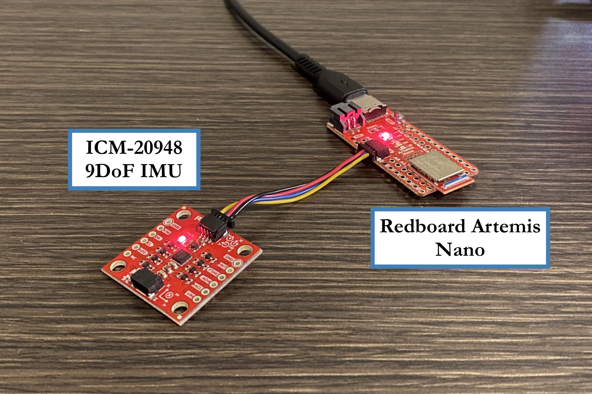
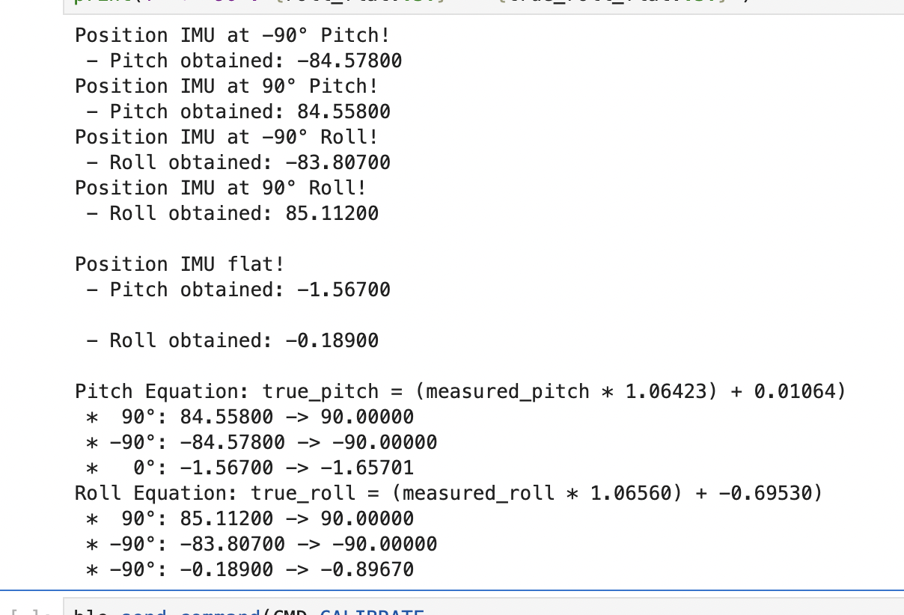
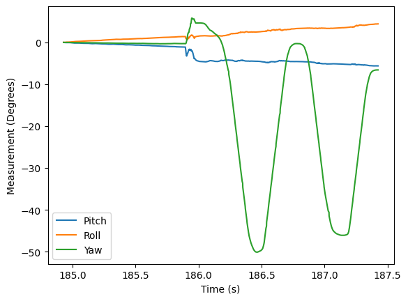
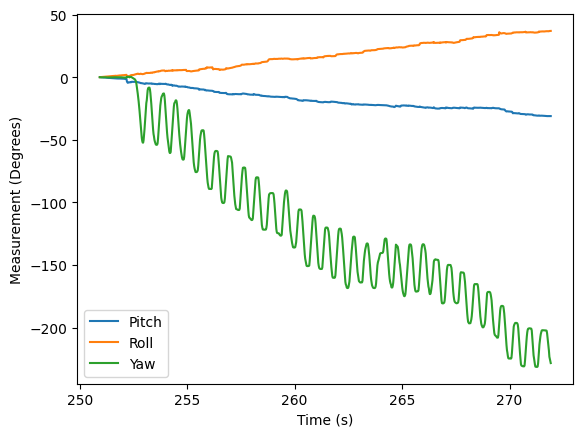
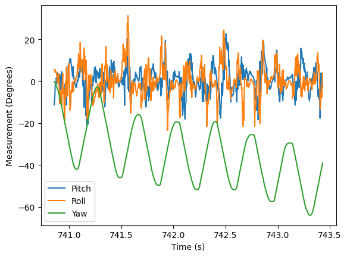
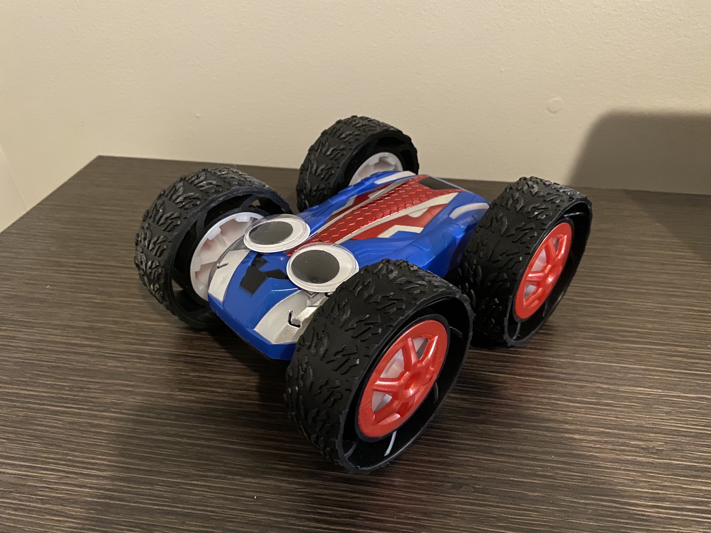

Lab 2: IMU Pose Data
An important task in robotics is being able to sense information about a robot’s position. In this lab, we take a look at doing so with an IMU, including using an accelerometer and gyroscope in combination.
Setup
Hardware setup for this lab was relatively straightforward; the IMU was connected with a QWIIC cable to the Artemis.
{kind=link}
After installing the appropriate library, we could demonstrate functionality with a simple demo to read data:
The acceleration data showed the magnitude of acceleration in each direction; this reflected the Earth’s gravitational pull in a given direction
The gyroscope data showed the current angular velocity in a given direction (0 when stationary)
Significance of AD0_VAL
One important define is the AD0_VAL signal. This
is the last bit of the I2C address for the IMU, and can be
jumped on the IMU breakout board to change its value (allowing for
multiple IMUs on the same I2C bus). Since ours isn’t jumped,
the default value of 1 is used.
Accelerometer
To get the IMU data, I created the command GET_ACCEL_CARTESIAN to get
the IMU’s cartesian acceleration, as well as GET_ACCEL_ATTITUDE to
get the pitch and roll. These were tested by having the IMU at -90°, 0°,
and 90° for pitch and roll, and using a Python function to report the
data.
float get_pitch() {
float x, z;
x = myICM.accX();
z = myICM.accZ();
return atan2(x, z) * 180 / M_PI;
}
float get_roll() {
float y, z;
y = myICM.accY();
z = myICM.accZ();
return atan2(y, z) * 180 / M_PI;
}
// handle_command case statement
case GET_ACCEL_ATTITUDE:
// Wait for data
while (!myICM.dataReady()) {
delay(500);
}
myICM.getAGMT();
tx_estring_value.clear();
tx_estring_value.append((int)millis());
tx_estring_value.append("|");
tx_estring_value.append(get_pitch());
tx_estring_value.append("|");
tx_estring_value.append(get_roll());
tx_characteristic_string.writeValue(tx_estring_value.c_str());
break;
def parse_attitude( data: str ) -> tuple[int, float, float]:
data_components = data.split("|")
time = data_components[0]
pitch = data_components[1]
roll = data_components[2]
return int(time), float(pitch), float(roll)
ble.send_command(CMD.GET_ACCEL_ATTITUDE, "")
data = ble.receive_string(ble.uuid['RX_STRING'])
time, pitch, roll = parse_attitude(data)
LOG.info(f"Received data: TIME = {time}, PITCH = {pitch:.5f}, ROLL = {roll:.5f}")
From here, we could perform a two-point calibration at the extreme
angles to correct any underlying bias. By measuring the raw data at known
extreme angles, and assuming the angle varied linearly, we could derive
an equation to determine the correct angle from measured data, and update
the Artemis with CALIBRATE
# Obtain data at -90 pitch
input("Position IMU at -90° Pitch!") # Wait until ready
ble.send_command(CMD.GET_ACCEL_ATTITUDE, "")
data = ble.receive_string(ble.uuid['RX_STRING'])
_, pitch_n90, _ = parse_attitude(data)
print(f" - Pitch obtained: {pitch_n90:.5f}")
# ...
# Obtain pitch_90, roll_n90, and roll_90 similarly, as
# well as flat for reference
# ...
# Calculate two-point calibration for both pitch and roll
pitch_slope = 180 / (pitch_90 - pitch_n90)
pitch_offset = 90 - (pitch_90 * pitch_slope)
roll_slope = 180 / (roll_90 - roll_n90)
roll_offset = 90 - (roll_90 * roll_slope)
# true_pitch = (measured_pitch * pitch_slope) + pitch_offset
# true_roll = (measured_roll * roll_slope ) + roll_offset
# Communicate back to Artemis
ble.send_command(CMD.CALIBRATE,
"{:.5f}".format(pitch_slope) + "|" +
"{:.5f}".format(pitch_offset) + "|" +
"{:.5f}".format(roll_slope) + "|" +
"{:.5f}".format(roll_offset))
We also measured the data at 0 degrees, to see how well it mapped. While the extremes were mapped perfectly by our equations (by design), the middle points were still slightly off (although the overall error improved), shown in the screenshot from Jupyter below.
{kind=link}
While this helps correct the data somewhat, there was still significant noise in the measurements. To try to eliminate this noise, I performed an FFT of data measured for a few seconds, to see whether we could discern data and noise by frequency (testing both when the IMU was stationary and moving).
By first obtaining data in batch amounts with
LOG_ACCEL_ATTITUDE_BULK, then transmitting it all with
GET_ACCEL_ATTITUDE_BULK (similar to Lab 1), I was able to achieve
a sample rate of ~376 measurements per second.
{kind=link}
Data from the stationary IMU in both the time and frequency domains
{kind=link}
Data from the moving IMU in both the time and frequency domains
Examining these graphs, it appears as though the low-frequency data ends around 5Hz, at which point noise appears in the system. To eliminate this, we can implement a low-pass filter with the following post-processing step, to incorporate the past measurement into the current (done for both pitch and yaw).
float alpha = 0.077; // Obtained from Python
data_lp[0] = data_raw[0];
for( int i = 0; i < num_samples; i++ ){
data_lp[i] = ( alpha * data_raw[i] ) +
( (1 - alpha) * data_lp[i - 1] );
data_lp[i - 1] = data_lp[i];
}
The collected data is low-passed with LOW_PASS_ATTITUDE_BULK, and
sent over in batch with GET_LOW_PASS_ATTITUDE_BULK.
{kind=link}
Comparison of measured and low-passed IMU data
We can see that the measured low-passed data is significantly smoother, as well as having decreased noise in the higher frequencies by over an order of magnitude.
Gyroscope
While our accelerometer can be noisy, we can also use a gyroscope, which has significantly less noise. However, this does come with the downside of having drift. We integrate measurements over time; therefore, if we happen to sample during a particularly fast point, integrating assumes that the gyroscope is moving that speed for the entire time step.
For 1000 samples with no delay in the sampling loop (i.e. relatively small time steps), this doesn’t result in too much drift:
{kind=link}
However, introducing a 20 millisecond delay (increasing each time step) can drastically increase the drift.
{kind=link}
This can be mitigated by combining the gyroscope and accelerometer data (for pitch and roll, since yaw doesn’t have acceleration to measure). We can fuse both measurements using a coefficient \(\alpha\) to mitigate noise/drift from the accelerometer/gyroscope, respectively:
This yields data that has less noise and drift than either the accelerometer or gyroscope alone (although some noise is still present from human vibration, and some drift is present from artificially high changes in yaw). Experimentally, I determined \(\alpha = 0.3\) provided a good balance.
{kind=link}
Collecting Data
Finally, we can optimize our code’s loop for data collection. This
involves collecting data in the main loop (determined by a flag
record_data), and simply skipping to the next iteration instead
of delaying when data isn’t available.
I chose to store this data as separate arrays (instead of one large array) to make indexing easier, as well as make it easier to debug any particular set of data if needed in the future.
Storage Size
We want to store at least 5 seconds of data. To use the least size
for each measurement, I chose to store all degree measurements as
floats (4B), with the time stamp as an int (4B), resulting
in each measurement taking 16B. For our memory size of 384kB, this
means that we could store 24576 measurements. With our measured
sample rate of ~355 measurements per second (slightly slower than
before, to listen for the stop command), this allows us to capture
data for 69 seconds continuously.
// handle_command case statement
case START_RECORD_DATA:
record_data = true;
break;
case STOP_RECORD_DATA:
record_data = false;
// Main loop
if( record_data & (num_samples_taken < NUM_SAMPLES) & myICM.dataReady() ){
num_data_loops++;
myICM.getAGMT();
curr_time = micros();
dt = (float)(curr_time - last_time) / 1000000;
last_time = curr_time;
pitch_g = curr_pitch + myICM.gyrX()*dt;
roll_g = curr_roll + myICM.gyrY()*dt;
yaw_g = curr_yaw + myICM.gyrZ()*dt;
curr_pitch = (comp_alpha * get_pitch()) + ((1 - comp_alpha) * pitch_g);
curr_roll = (comp_alpha * get_roll()) + ((1 - comp_alpha) * roll_g);
curr_yaw = yaw_g;
data_time[num_samples_taken] = (int)millis();
data_pitch[num_samples_taken] = curr_pitch;
data_roll[num_samples_taken] = curr_roll;
data_yaw[num_samples_taken] = curr_yaw;
num_samples_taken++;
}
During this time, we used num_data_loops to count the number of
iterations of the loop. This turned out to be the same as the overall
number of iterations of the main loop, indicating data was always
available.
RC Stunt
Lastly, we get to meet Ned, my RC car!
{kind=link}
After test-driving Ned and doing some spins/flips, it’s clear that he has a good range of motion. However, the wheels do suffer from slipping, and the motions are somewhat jerky - hopefully something we’ll be able to fix in future labs